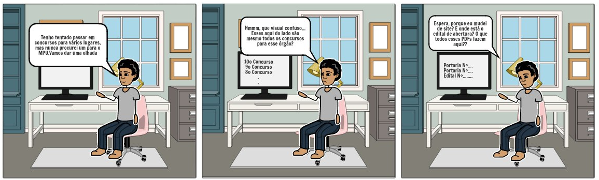

StoryBoard: Visualizar concursos
Preparo
Definição das pessoas envolvidas
- Persona: Alexandre Gomes, 20 anos, estudante de fisioterapia.
Definição do ambiente da história
- Quarto de Alexandre, em seu computador pessoal.
Definição da tarefa que será abordada
- Acessar a página de concursos do MPU para conferir se há algum com inscrições abertas para que Alexandre participe.
Sequência
Definição de quais passos estão envolvidos para realização da tarefa
- Acessar o site do MPU.
- Clicar em um concurso na aba lateral "Concursos-Servidores".
- Acessar o edital referente ao concurso selecionado.
Definição do que leva a pessoa a usar a aplicação
- Interesse em buscar informações sobre concursos referentes ao MPU.
Definição de qual tarefa será ilustrada
- Na tarefa lustrada, Alexandre busca conseguir informações sobre os últimos concursos abertos para o MPU, afim de que possa participar do processo seletivo.
Satisfação
Definição da motivação principal da pessoa que usa a aplicação
- Acesso a informação sobre concursos do MPU.
Definição das realizações que a aplicação permite
- Acessar editais de concursos referentes ao MPU.
Definição das necessidades que a aplicação se propõe a sanar
- Acesso rápido e eficaz a informações confiáveis sobre concursos para entrada no Ministério Público da União.
Storyboard:
 FIgura 1: Storyboard feito com a ferramenta online StoryboardThat
{kind=link}
autor: Matheus
Histório de Revisões
| Data | Versão | Descrição | Autor(es) |
|---|---|---|---|
| 08/04/2021 | 1.0 | Criação do documento e storyboard | Matheus Clemente |